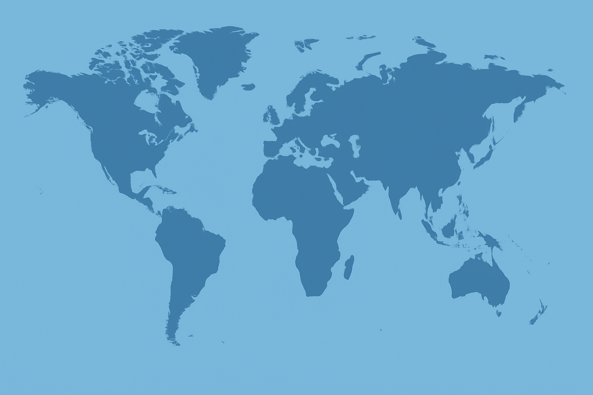

Projects

Fetal Health Classifier
Classification model using machine learning and CNNs to predict fetal health from CTG data. Deployed with Azure for real-time predictions via API.

Health Insurance Analysis
Exploratory data analysis and forecasting of insurance charges using regression models.
Raster Data Extraction
Extracted and visualized oceanic raster data from .tif files for geospatial analysis. Used Python, PySpark, matplotlib and Power BI.

Lung Cancer Detection
Carried out Exporatory Data Analysis and built a Prediction model using Scikit-learn.